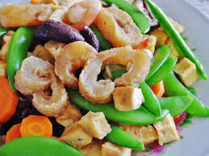

Sea Cucumber
Ways to Eat It: Don't order it, immediately throw it away, pretend to be allergic, etc.
Pros: Great, now you can eat something else and not make people look at your sea cucumber during dinner.
Cons: You have already made everyone sick just by bringing it up. We are all trying to enjoy ourselves here.
